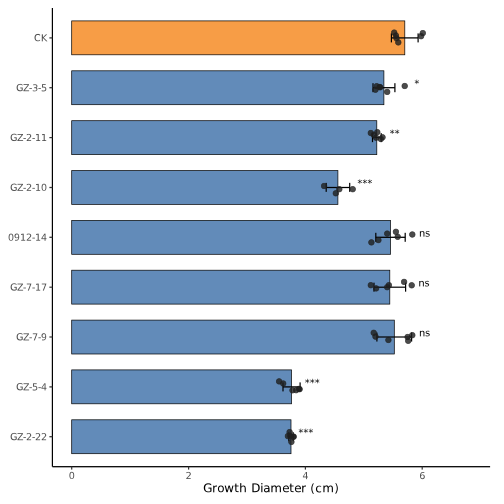

基础条形图
堆叠条形图
簇状条形图
基础条形图与 t 检验
脚本说明书：
- 自动读取首列组名,其余列为重复样本的 CSV 文件。
- 自动忽略空值，有多少有效样本就绘制多少散点。
- 绘制均值条形图、原始散点和均值 ± SD，你也可以改为均值 ± SE。
- 默认以第一条数据行 CK 为对照，基于这行数据进行检验。
- 每组先进行双侧 F 方差齐性检验，方差齐则进行 Student 等方差 t 检验；方差不齐进行 Welch t 检验。
- 使用 ***、**、*、ns 标注显著性，可通过 ANNOTATION_OFFSET <- 0.035 调整间距。
- 同时输出 _statistics.csv，记录方差检验、t 检验及校正前后 p 值。
- 文件头可设置输入/输出路径、尺寸比例、横纵方向、配色、字体、显著性阈值、多重比较校正等。
- 排列方向开关，REVERSE_GROUP_ORDER <- TRUE 则颠倒条形图。
示例输出图片：
